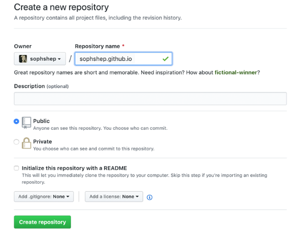
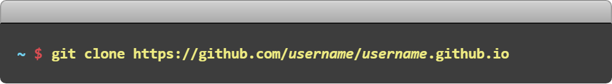
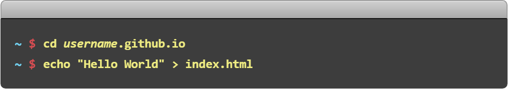
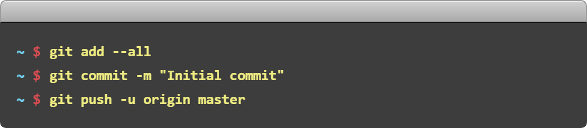

What is GitHub Pages?
Ready to get started? Build your own site from scratch or generate one for your project.
You get one site per GitHub account and organization, and unlimited project sites. Let‘s get started.
-
1
Create a repository
Head over to GitHub and create a new repository named username.github.io, where username is your username (or organization name) on GitHub.
If the first part of the repository doesn’t exactly match your username, it won’t work, so make sure to get it right.
-
?
What git client are you using?
-
2
Clone the repository
Go to the folder where you want to store your project, and clone the new repository:
 -
3
Hello World
Enter the project folder and add an
index.htmlfile: -
4
Push it
Add, commit, and push your changes:
 -
5
…and you're done!
Fire up a browser and go to https://username.github.io.